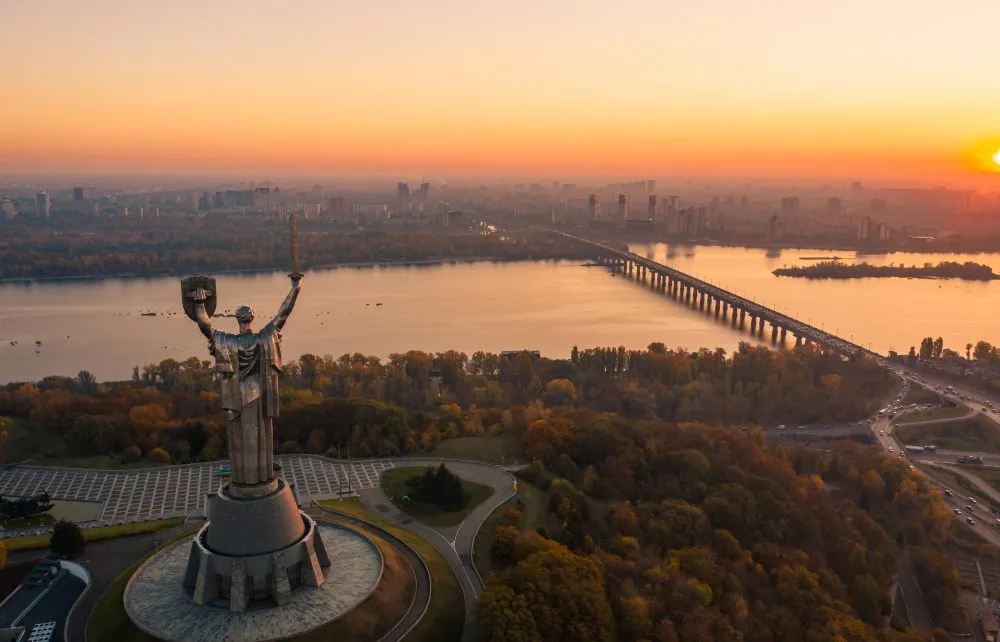

Київ— столиця та найбільше місто України. Розташований у середній течії Дніпро,
у північній Наддніпрянщині. Політичний, соціально-економічний, транспортний, освітньо-науковий,
історичний, культурний та духовний центр України.
У системі адміністративно-територіального устрою
України Київ має спеціальний статус, визначений Конституцією, і не входить до складу жодної області,
хоча і є адміністративним центром Київської області. Місце розташування центральних органів влади
України, іноземних місій, штаб-квартир більшості підприємств і громадських об'єднань, що працюють в
